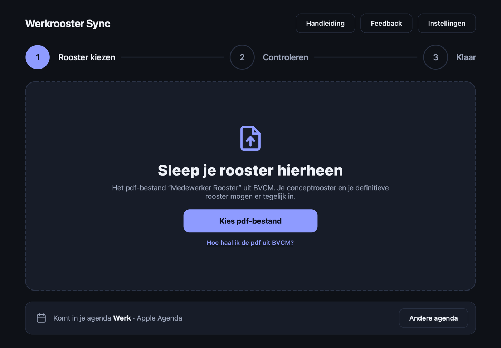
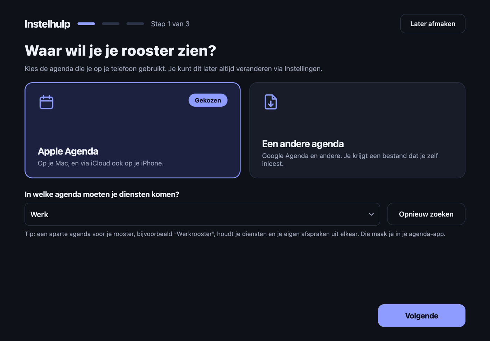
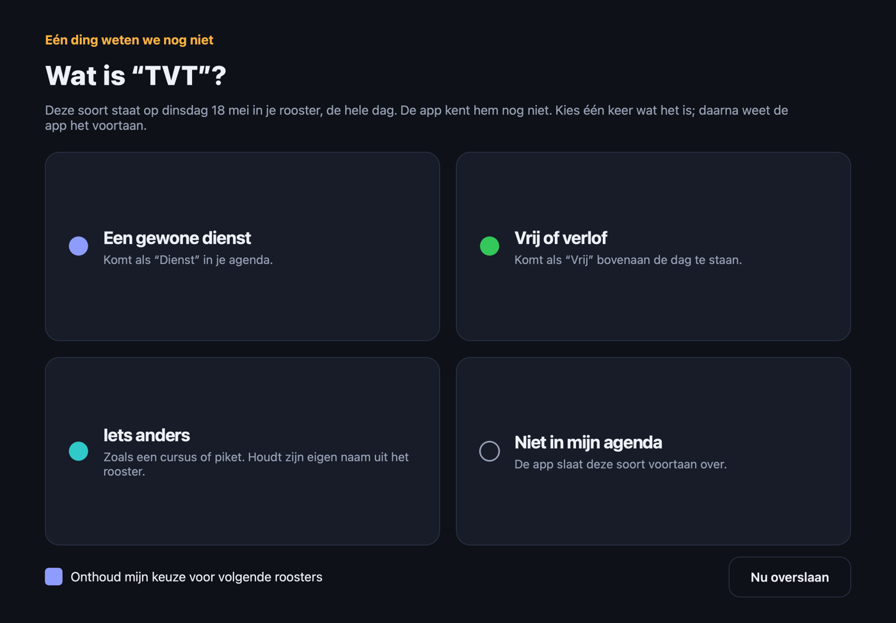
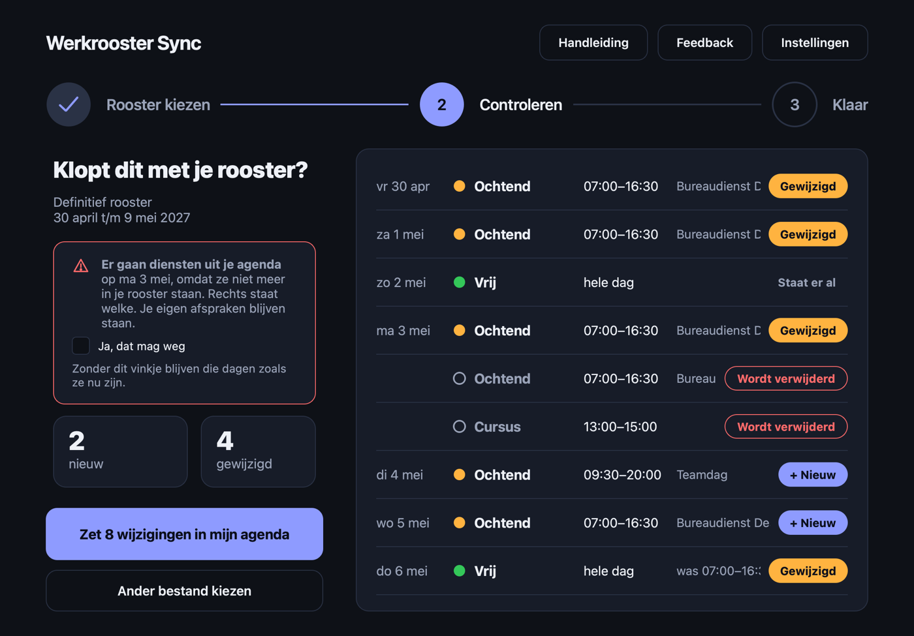
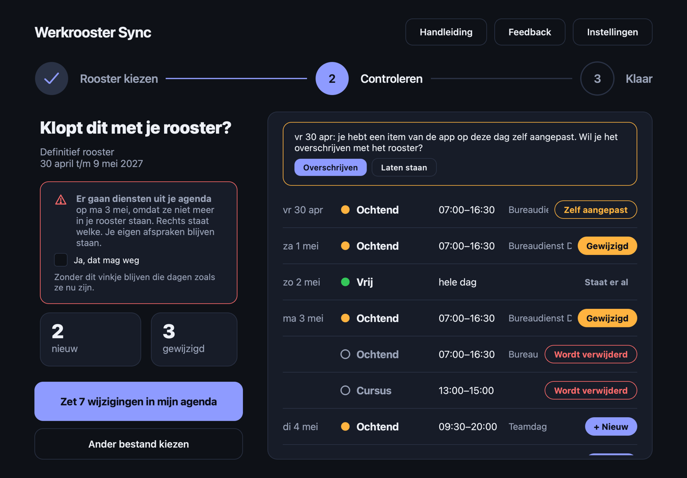
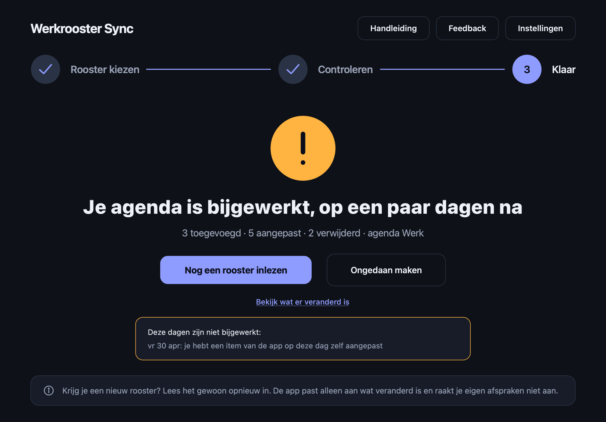
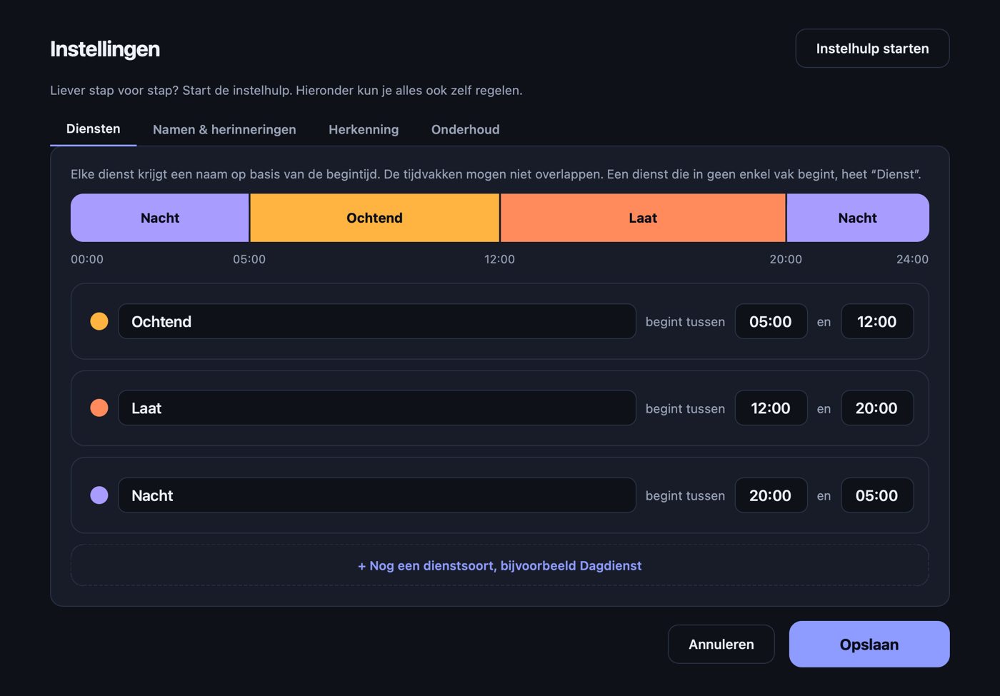
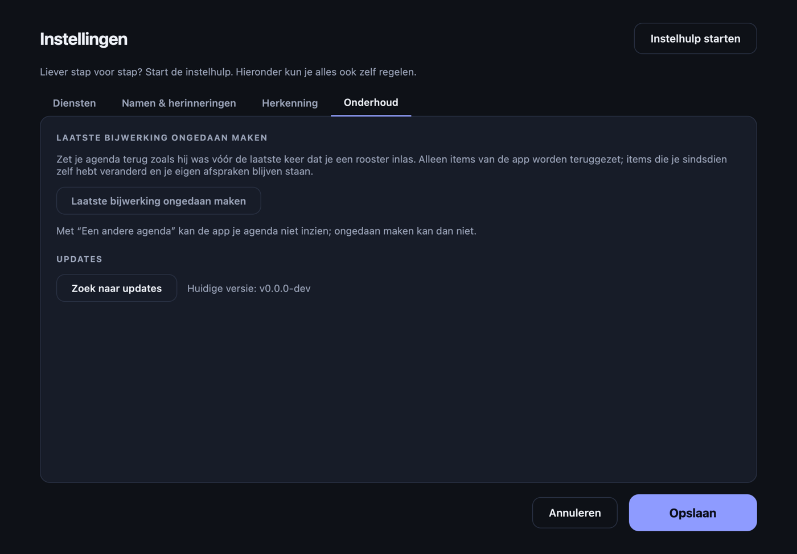
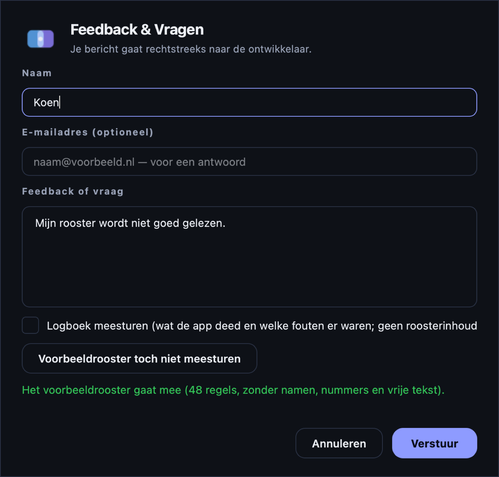

Je rooster uit BVCM in je agenda — en bij een nieuw rooster alleen bijwerken wat veranderd is.
Handleiding · versie 2 · Mac en Windows

Werkrooster Sync leest het pdf-bestand “Medewerker Rooster” uit BVCM en zet je diensten in je agenda: Apple Agenda op de Mac, Outlook op Windows, of een bestand dat je in elke andere agenda kunt openen.
Bij de eerste start loopt een korte instelhulp met je mee. Je kiest in welke agenda je rooster komt, en je ziet aan de hand van je eigen rooster hoe de diensten gaan heten. Later terugkijken of aanpassen kan altijd via Instellingen → Instelhulp starten.

Sleep de pdf naar het venster, of klik op Kies pdf-bestand. Heb je zowel een conceptrooster als het definitieve rooster? Die mogen er tegelijk in; de app gebruikt per dag het nieuwste.
Onderaan zie je in welke agenda het rooster komt. Met Andere agenda kies je een andere.
Staat er een code in je rooster die de app niet kent, dan vraagt hij één keer wat het is: een gewone dienst, vrij of verlof, iets anders (zoals een cursus) of iets wat niet in je agenda hoeft. Met het vinkje Onthoud mijn keuze hoeft dat daarna nooit meer.

Voordat er iets in je agenda verandert, zie je per dag wat er gaat gebeuren. Links staat een samenvatting, rechts de dagen.

| Label | Wat het betekent |
|---|---|
| + Nieuw | Deze dienst komt erbij. |
| Gewijzigd | De dienst stond er al, maar de tijd of inhoud is veranderd. Hij wordt aangepast. |
| Wordt verwijderd | Staat in je agenda, maar niet meer in je rooster. Hij gaat eruit, maar alleen als je dat goedkeurt. |
| Staat er al | Niets veranderd; de app doet hier niets. |
| Zelf aangepast | Je hebt een dienst van de app zelf veranderd. De app vraagt wat je wilt. |
Gaat er iets weg, dan staat links een rood blok met de dagen erbij. Zet het vinkje Ja, dat mag weg aan als dat klopt. Zonder vinkje blijven die dagen zoals ze nu zijn; de rest wordt wel bijgewerkt.
Heb je een dienst van de app zelf aangepast, bijvoorbeeld een notitie toegevoegd of de tijd verschoven? Dan overschrijft de app dat niet zomaar. Bovenaan verschijnt de vraag: Overschrijven met wat er in het rooster staat, of Laten staan.

Klopt alles? Klik op de grote knop, bijvoorbeeld Zet 6 wijzigingen in mijn agenda. Klopt het niet, kies dan Ander bestand kiezen; er is dan nog niets veranderd.

Je ziet hoeveel diensten erbij kwamen, zijn aangepast of zijn verwijderd. Dagen die bewust niet zijn bijgewerkt (omdat jij “Laten staan” koos of geen vinkje zette) staan eronder.
Toch niet goed? Ongedaan maken zet je agenda terug zoals hij was vóór deze ronde. Dat kan ook later nog, via Instellingen → Onderhoud, en zelfs als de app halverwege werd afgesloten. Items die je sindsdien zelf hebt veranderd en je eigen afspraken blijven staan.
Kies je “Een andere agenda” (een .ics-bestand), dan maakt de app een bestand dat je zelf opent in je agenda. De app kan die agenda niet inzien; bijwerken, verwijderen en ongedaan maken doet je agenda-programma dan zelf, of niet.
Elke dienst krijgt een naam op basis van de begintijd. In het tabblad Diensten stel je de tijdvakken in. Standaard: Ochtend 05:00–12:00, Laat 12:00–20:00, Nacht 20:00–05:00. Een dienst die in geen enkel vak begint, heet “Dienst”.

Per soort dienst kies je de naam in je agenda, of hij als blok op de echte tijden staat of als hele-dag-item, en of je een herinnering wilt.
Hier staan de woorden waaraan de app vrije dagen, verlof en afspraken herkent. Je kunt ze aanvullen, bijvoorbeeld met een code die bij jouw eenheid anders heet.

Loop je ergens tegenaan, of heb je een idee? Klik op Feedback bovenin.

Roosters van andere eenheden kunnen er net anders uitzien. Stuur dan een voorbeeldrooster zonder persoonsgegevens mee. De app maakt van je pdf een nieuw tekstbestand waarin alleen de opbouw staat: kolommen, datums, tijden en algemene codes zoals DIENST of VERLOF. Namen, nummers, notities en activiteiten worden vervangen door x en 0, en verlofcodes die iets privés kunnen zeggen worden “AFWEZIG”. De pdf zelf gaat nooit mee.
Je ziet de tekst die meegaat altijd eerst, en je kunt hem nog weghalen.
De app houdt een klein logboek bij van wat hij deed en welke fouten er waren. Daarin staan aantallen en datums, maar geen roosterinhoud, titels of agendanamen. Je kunt het meesturen met je feedback; ook dat zie je eerst.
Dat is nodig om diensten in je agenda te zetten. Klik op Sta toe. Heb je eerder “Niet toestaan” gekozen: ga naar Systeeminstellingen → Privacy en beveiliging → Automatisering (of Agenda’s) en zet Werkrooster Sync aan.
De app heeft geen betaald Apple-certificaat. Probeer de app één keer te openen en klik de melding weg. Ga dan naar Systeeminstellingen → Privacy en beveiliging, scrol naar beneden en klik bij Werkrooster Sync op Open toch. Dat hoeft maar één keer.
Ook hier is er geen betaald certificaat. Klik op Meer informatie en dan Toch uitvoeren.
Nee. De app geeft zijn eigen items een onzichtbaar kenmerk en raakt alleen die aan. Ook een dienst die je zelf hebt aangepast, wordt pas overschreven als jij dat zegt.
Diensten die de vorige versie in je agenda zette, worden herkend en bijgewerkt. Je hoeft niets op te ruimen.